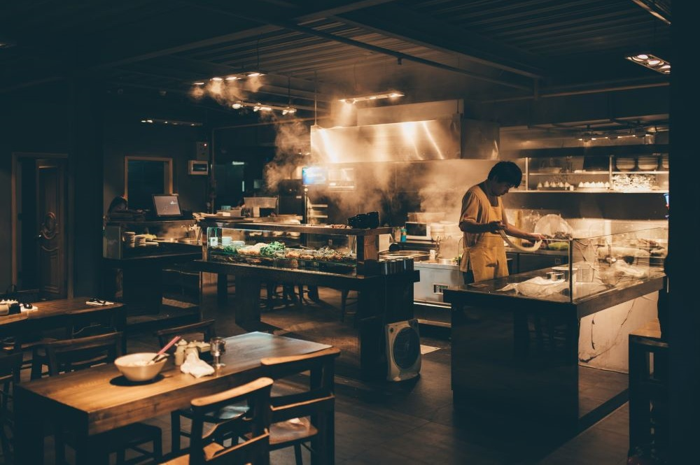

Meniul este o expresie a dragostei noastre pentru nutriție de înaltă calitate și a pasiunii pentru gătit. Fiecare preparat este meticulos creat folosind ingrediente proaspete, organice și locale, care permit păstrarea gustului autentic și a valorii nutriționale a fiecărui aliment. De la salata proaspătă la preparatele principale, fiecare gustare este o călătorie culinară care înnobilează sănătatea.Prepararea mâncărurilor se face într-un mod sănătos, folosind tehnici precum coacerea, gătirea la abur, grătarul sau fierberea, în locul prăjirii sau prăjelii excesive. Se evită utilizarea uleiurilor și grăsimilor saturate în exces.
Risipa alimentară este o problemă răspândită pe plan global. Se estimează că aproximativ o treime din alimentele produse la nivel mondial sunt aruncate sau irosite în fiecare an. Risipa alimentară este o problemă complexă, dar cu eforturi colective putem reduce semnificativ acest fenomen dăunător. Este important să recunoaștem gravitatea problemei și să luăm măsuri pentru a minimiza risipa alimentară și a promova un sistem alimentar mai durabil și echitabil. Restaurantul se bazeaza pe o noua metoda de a minimiza risipa alimentara, promovand un meniu compus din preparate de baza create pentru a satisface atat nevoile nutriționale, cat si papilele gustative
Bucurați-vă de o delicioasă îmbinare între textura pufoasă a pancakelor și prospețimea dulce-acrișoară a afinelor cu Pancakes-ul nostru special. Un desert matinal sau o decadentă opțiune pentru brunch, această creație delicioasă este pregătită cu ingrediente proaspete și atenție la detalii pentru a vă oferi o experiență gustativă memorabilă.

Experimentați o explozie de arome umami și texturi bogate cu Ramen-ul nostru cu Rață, o reinterpretare autentică a clasicului asiatic care va încânta cu siguranță simțurile. Pregătit cu pasiune și atenție la detalii, acest ramen oferă o experiență culinară complexă, aducând laolaltă gustul delicat al raței și aromele rafinate ale condimentelor asiatic.
Preparat cu măiestrie și pasiune, acest delicios burrito aduce împreună ingrediente proaspete și condimente autentice pentru a vă oferi o experiență gustativă autentică. Experimentați autenticitatea fiecărei mușcături cu Burrito-ul nostru cu Pui și Legume - o călătorie gastronomică în care prospețimea ingredientelor se îmbină perfect.
Descoperiți autenticitatea bucătăriei hawaiiene cu Poke Bowl-ul nostru, o combinație vibrantă și sănătoasă de ingrediente proaspete, perfect asamblate pentru a vă oferi o experiență culinară revigorantă. Fiecare ingredient este atent ales și aranjat cu grijă pentru a vă oferi un Poke Bowl echilibrat și plin de arome proaspete.
Această selecție de legume la grătar nu este doar o opțiune sănătoasă, ci și o călătorie în lumea gusturilor autentice ale grătarului. Fiecare legumă este pregătită cu grijă pentru a vă oferi o explozie de arome proaspete și delicioase în fiecare mușcătură. Un deliciu pentru cei care apreciază prospețimea și rafinamentul.
Experimentați o explozie de arome minunate și nutrienți în fiecare mușcătură din toast-ul nostru special de avocado. Avocado cremos și matur, perfect combinat cu condimente proaspete și ingrediente de cea mai înaltă calitate, reprezintă o opțiune gustoasă și sănătoasă pentru micul dejun sau brunchul din fiecare zi.
Green Cuisine este locul unde designul interior se întâlnește cu rafinamentul pentru a vă oferi o experiență culinară de neuitat. La intrare, veți fi întâmpinați de o atmosferă caldă și primitoare, marcând începutul unei călătorii gastronomice inedite. Ușile noastre elegante se deschid către un interior sofisticat, unde fiecare element a fost ales cu grijă pentru a vă oferi o experiență completă. Mesele noastre sunt amenajate cu atenție, iar scaunele confortabile vă invită să vă relaxați și să vă bucurați de fiecare moment petrecut în compania noastră. Decorul, de la tablouri artistice la detalii arhitecturale inovatoare, reflectă personalitatea și povestea unică a restaurantului nostru. Podelele elegante și iluminatul atent studiat completează atmosfera, creând un cadru plăcut pentru fiecare întâlnire la masă. Fiecare nuanță de culoare și fiecare textură au fost alese cu grijă pentru a vă oferi o experiență vizuală de neuitat. De la mobilierul elegant până la accentele de iluminat plăcut, totul se îmbină pentru a vă transpune într-un spațiu rafinat, pregătit să vă surprindă și să vă incite simțurile. La restaurantul nostru, interiorul nu este doar un cadru, ci o parte esențială a povestirii noastre culinare, iar suntem încântați să vă avem alături pentru a explora și a savura această experiență de excepție.
Petrecerile tematice aduc o notă de distracție și originalitate în fiecare seară petrecută la noi. De la serate cu muzică live și evenimente culturale până la petreceri tematice incendiare, avem o varietate de evenimente care vă vor transforma fiecare vizită într-o experiență de neuitat.
Echipa noastră de bucătari este compusă din profesioniști experimentați și creativi, care lucrează împreună pentru a aduce la masă preparate proaspete și delicioase. Fiecare membru contribuie cu abilitățile sale unice, creând o sinergie care se reflectă în fiecare farfurie servită. Front-office-ul nostru este condus de ospitalitatea și atenția la detalii ale personalului nostru de servire. De la chelneri și ospătari pasionați până la managerii care asigură buna desfășurare a evenimentelor, fiecare membru al echipei se străduiește să creeze o atmosferă primitoare și să ofere servicii de cea mai înaltă calitate. Suntem mândri de echipa noastră și credem că pasiunea și profesionalismul acestora contribuie la succesul nostru continuu. Vă invităm să descoperiți povestea fiecărui membru al echipei noastre și să vă alăturați nouă pentru o călătorie gastronomică de excepție la Green Cuisine.

La baza oricărei mese reușite stă pasiunea pentru prepararea hranei, iar pentru mine, ca bucătar șef, această pasiune devine o artă cu fiecare ingredient ales și fiecare gust adus în armonie. Femeile au adus și aduc, în continuare, o contribuție semnificativă în universul culinar, iar în calitate de bucătar șef femeie, consider că putem aduce o notă de sensibilitate și creativitate în fiecare farfurie. Fiecare preparat reprezintă o poveste, iar eu îmi propun să transform fiecare experiență culinară într-un dialog gustativ captivant.

Echipa noastră dedicată și talentată se angajează să ofere nu doar preparate delicioase, ci și experiențe memorabile. În spatele fiecărui detaliu, de la selecția atentă a meniului până la atmosfera caldă și primitoare, stă dorința noastră de a vă oferi momente speciale și unice. Suntem deschiși la inovație și mereu în căutare de noi modalități de a vă surprinde papilele gustative și de a vă oferi o experiență variată și rafinată. În plus, suntem mândri să găzduim evenimente speciale..
În culisele bucătăriei noastre de la Green Cuisine, îmi dedic pasiunea și priceperea pentru a contribui la fiecare experiență culinară extraordinară pe care o oferim clienților noștri. Ca ajutor de bucătar, văd fiecare preparat ca pe o piesă de artă în care detalii minuțioase și dedicare fac diferența.În spatele fiecărui meniu delicios și fiecărui preparat proaspăt pregătit, stă echipa noastră unită unde colaborarea și comunicarea sunt cheia succesului.